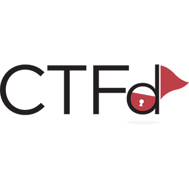
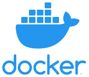
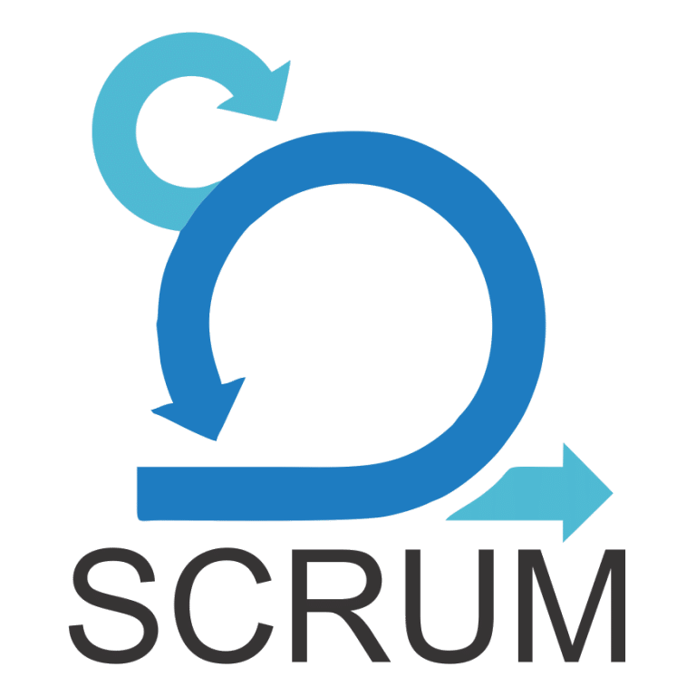

Break The Code
Plateforme dédiée aux défis Capture The Flag
Description
Lors de ma deuxième année à l'IUT informatique, j'ai eu l'opportunité de travailler pour l’association
Yggame, une organisation spécialisée dans l’organisation d’événements liés au domaine de
l’informatique. Dans le cadre de son développement, l’association envisageait de lancer un nouveau projet
ambitieux : la création d’un événement consacré à la cybersécurité.
Cet événement prenait la forme d’un Capture The Flag (CTF),
un challenge interactif qui permettrait aux participants de tester leurs compétences en sécurité
informatique dans un environnement à la fois ludique et pédagogique.
Fonctionnalités Clés
Défis utilisant des vulnérailibé SSH
J'ai conçu plusieurs défis exploitant des vulnérabilités de connexion pour permettre, par exemple, une prise de contrôle via SSH et l'obtention de privilèges administrateurs.
📚 Raindow Jumper
Pour récupérer le "flag", il faut désactiver les collisions et augmenter la vitesse afin d'atteindre un score de 25 000.
Technologies Utilisées
-
 SSH
SSH
-
 Flask
Flask
-
 Ctdf
-
 Docker
-
 Scrum
-
 Wordpress
Wordpress
Détails Techniques
- Architecture : MVC
- Base de données : MySql
- Déploiement : Docker
Statistiques
- Date de début Septembre 2024
- Date de fin Janvier 2025
Galerie